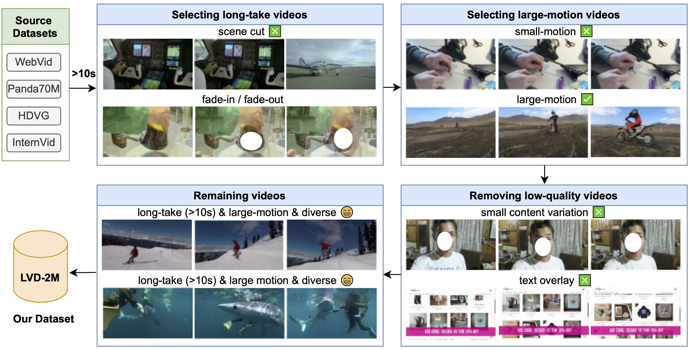

The video captures an intense basketball game or practice session on an indoor court with distinctive orange, black, purple, and white color schemes. The players, dressed in athletic attire, engage in various actions such as dribbling, shooting, passing, defending, and interacting with each other. The court, equipped with multiple hoops, serves as a dynamic backdrop for the ongoing game, highlighting the competitive and active nature of the sport.
Demo Video
Abstract
The efficacy of video generation models heavily depends on the quality of their training datasets. Most previous video generation models are trained on short video clips, while recently there has been increasing interest in training long video generation models directly on longer videos. However, the lack of such high-quality long videos impedes the advancement of long video generation. To promote research in long video generation, we desire a new dataset with four key features essential for training long video generation models: (1) long videos covering at least 10 seconds, (2) long-take videos without cuts, (3) large motion and diverse contents, and (4) temporally dense captions. To achieve this, we introduce a new pipeline for selecting high-quality long-take videos and generating temporally dense captions. Specifically, we define a set of metrics to quantitatively assess video quality including scene cuts, dynamic degrees, and semantic-level quality, enabling us to filter high-quality long-take videos from a large amount of source videos. Subsequently, we develop a hierarchical video captioning pipeline to annotate long videos with temporally-dense captions. With this pipeline, we curate the first long-take video dataset, LVD-2M, comprising 2 million long-take videos, each covering more than 10 seconds and annotated with temporally dense captions. We further validate the effectiveness of LVD-2M by fine-tuning video generation models to generate long videos with dynamic motions. We believe our work will significantly contribute to future research in long video generation.
Data Pipeline

Video filtering process. Our video filtering process employs multiple criteria to select high-quality, dynamic, and long-take videos from four source datasets.

Hierarchical video captioning process. First, we split the long video into 30-second clips and compose them into image grids. Then, we use the LLaVA-1.6-34B model to generate captions for each image grid. Finally, we use the Claude3-Haiku model to refine and merge these captions into the final complete caption for the whole video.